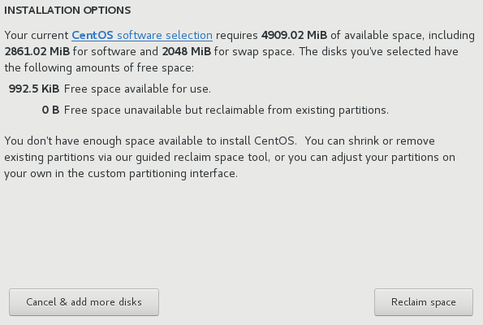

Installation Destination
To select the disks and partition the storage space on which you will install CentOS, select Installation Destination in the Installation Summary screen. If you are unfamiliar with disk partitions, see An Introduction to Disk Partitions for more information.
|
Back up any data that you have on your systems. Unforeseen circumstances can result in loss of all your data. |
|
If you install CentOS in text mode, you can only use the default partitioning schemes described in this section. You cannot add or remove partitions or file systems beyond those that the installation program automatically adds or removes. |
|
Special cases
|
On this screen, you can see storage devices available locally on your computer. You can also add additional specialized or network devices by clicking the Add a disk button. To learn more about these devices see Storage Devices (ppc).
If you do not feel comfortable with partitioning your system, leave the default selection of the Automatically configure partitioning radio button to let the installation program partition the storage devices for you.
Below the panes for storage devices is a form of additional controls labeled Other Storage Options:
-
In the
Partitioningsection, you can select how storage devices are partitioned and how volumes are created. You can configure the partitions, manually or allow the installation program to do it automatically.Automatic partitioning is recommended if you are doing a clean installation on previously unused storage or do not need to keep any data that might be present on the storage. To proceed this way, leave the default selection of the
Automatically configure partitioningradio button, and the installation program will create the necessary partitions and volumes on the storage space for you.For automatic partitioning, you can also select the
I would like to make additional space availablecheck box to choose how to reassign space from other file systems to this installation. After you click Done, there are two dialogs that can appear. If you selected automatic partitioning but there is not enough storage space to complete the installation using the recommended partitioning configuration, a dialog will appear:Figure 2. Installation Options Dialog with Option to Reclaim SpaceYou can click to the
CentOS software selectionlink. The link will navigate you to theSoftware selectionsection, where you can change what software you want to install, and free some aditional storage space.Alternatively, you can click Cancel & add more disks to return to the
Installation Destinationscreen, where it is possible to add more storage devices or choose to configure partitioning manually. Click Reclaim space to free some storage space from existing file systems. See Reclaim Disk Space (ppc) for details.The second dialog appears if you cannot create enough free space. In this case, you have to add more disks on the initial storage screen or quit the installation.
If you select the
I will configure partitioningradio button for manual setup, you will be brought to theManual Partitioningscreen after clicking Done. See Manual Partitioning (ppc) for details. -
In the
Encryptionsection, you can select theEncrypt my datacheck box to encrypt all partitions except for the/bootpartition. See the Red Hat Enterprise Linux 7 Security Guide for information on encryption.
At the bottom of the screen is the Full disk summary and bootloader button for you to configure a disk on which a boot loader will be installed.
See Boot Loader Installation (ppc) for more information.
Click the Done button once you have made your selections to either return to the Installation Summary screen or to proceed to the Manual Partitioning screen.
Boot Loader Installation
CentOS uses GRUB2 (GRand Unified Bootloader version 2) as its boot loader. The boot loader is the first program that runs when the computer starts and is responsible for loading and transferring control to an operating system. GRUB2 can boot any compatible operating system and can also use chain loading to transfer control to other boot loaders for unsupported operating systems.
|
Installing GRUB2 can overwrite your existing boot loader. |
If you have other operating systems already installed, CentOS attempts to automatically detect and configure GRUB2 to boot them. You can manually configure any additional operating systems if they are not detected properly.
To specify which device the boot loader should be installed on, click the Full disk summary and bootloader link at the bottom of the Installation Destination screen. The Selected Disks dialog will appear. If you are partitioning the drive manually, this dialog can be reached by clicking Storage device/s selected on the Manual Partitioning screen.

In the Boot column, a green tick icon marks one of the devices as the intended boot device. To change the boot device, select a device from the list and click the Set as Boot Device button to install the boot loader there instead.
To decline installation of a new boot loader, select the marked device and click the Do not install bootloader button. This will remove the tick and ensure GRUB2 is not installed on any device.
|
If you choose not to install a boot loader for any reason, you will not be able to boot the system directly, and you must use another boot method, such as a commercial boot loader application. Use this option only if you are sure you have another way to boot your system. |
Encrypt Partitions
If you selected the Encrypt my data option, when you click to proceed to the next screen the installation program will prompt you for a passphrase with which to encrypt the partitions on the system.
Partitions are encrypted using the Linux Unified Key Setup - see the Red Hat Enterprise Linux 7 Security Guide for more information.

Choose a passphrase and type it into each of the two fields in the dialog box. Note that you need to use the same keyboard layout for setting up this passphrase that you will use to unlock partitions later. Use the language layout icon to ensure the correct layout is selected. You must provide this passphrase every time that the system boots. Press Tab while in the Passphrase input field to retype it. If the passphrase is too weak, a warning icon appears in the field and you will not be allowed to type in the second field. Hover your mouse cursor over the warning icon to learn how to improve the passphrase.
|
If you lose this passphrase, any encrypted partitions and the data on them will become completely inaccessible. There is no way to recover a lost passphrase. Note that if you perform a Kickstart installation, you can save encryption passphrases and create backup encryption passphrases during installation. See the Red Hat Enterprise Linux 7 Security Guide for more information about disk encryption. |
Reclaim Disk Space
If there is insufficient space to install CentOS on the disks selected in Installation Destination and you selected Reclaim Space at the Installation Options dialog, the Reclaim Disk Space dialog appears.
|
Unless you select to shrink a partition, reclaiming space on a partition involves deleting all the data on it and you should always verify that any data you need to keep was backed up. |
The existing file systems CentOS has detected are listed in a table as part of their respective disks. The Reclaimable Space column lists the space that could be reassigned to this installation. The Action column lists what action will be taken with the file system to reclaim space.
Beneath the table are four buttons:
-
Preserve - leaves the file system untouched and no data will be deleted. This is the default action.
-
Delete - removes the file system entirely. All the space it takes up on the disk will be made available for the installation.
-
Shrink - recovers free space from the file system and makes it available for this installation. Use the slider to set a new size for the selected partition. Can only be used on resizable partitions where LVM or RAID is not used.
-
Delete all/Preserve all - this button, located on the right, marks all file systems for deletion by default. Upon clicking, it changes the label and allows you to mark all file systems to be preserved again.
Select a file system or a whole disk in the table with your mouse and click one of the buttons. The label in the Action column will change to match your selection and the amount of Total selected space to reclaim displayed beneath the table will adjust accordingly. Beneath this value is the amount of space the installation requires based on the packages you have selected to install.
When enough space has been reclaimed for the installation to proceed, the Reclaim Space button will become available. Click this button to return to the Installation Summary screen and proceed with the installation.